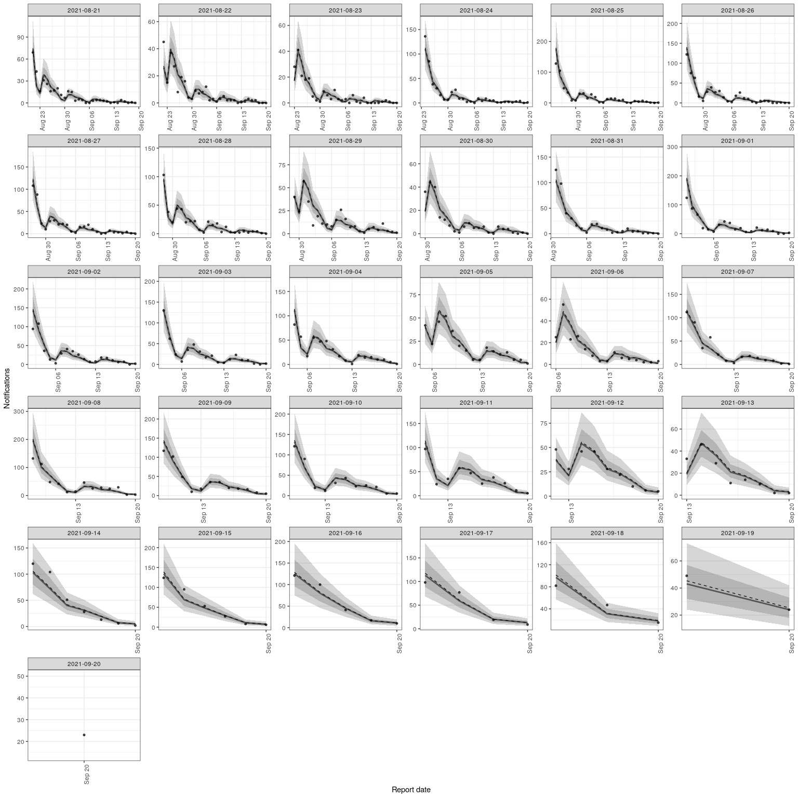

This package contains tools to enable flexible and efficient nowcasting of right censored epidemiological counts using a semi-mechanistic method with adjustment available for both day of reference and day of report effects.
Installation
Installing the package
Install the unstable development from GitHub using the following,
remotes::install_github("seabbs/epinowcast", dependencies = TRUE)Installing CmdStan
If you don’t already have CmdStan installed then, in addition to installing epinowcast, it is also necessary to install CmdStan using CmdStanR’s install_cmdstan() function to enable model fitting in epinowcast. A suitable C++ toolchain is also required. Instructions are provided in the Getting started with CmdStanR vignette. See the CmdStanR documentation for further details and support.
cmdstanr::install_cmdstan()Quick start
Example data
library(epinowcast)
national_germany_hosp <- germany_covid19_hosp
national_germany_hosp <- national_germany_hosp[location == "DE"]
national_germany_hosp <- national_germany_hosp[age_group %in% "00+"]
nat_germany_30_days_ago <-
national_germany_hosp[report_date <= max(report_date) - 30]
nat_germany_30_days_ago <-
nat_germany_30_days_ago[reference_date >= (max(reference_date) - 30)]
nat_germany_30_days_ago[]
#> reference_date location age_group confirm report_date
#> 1: 2021-08-21 DE 00+ 69 2021-08-21
#> 2: 2021-08-22 DE 00+ 45 2021-08-22
#> 3: 2021-08-23 DE 00+ 28 2021-08-23
#> 4: 2021-08-24 DE 00+ 136 2021-08-24
#> 5: 2021-08-25 DE 00+ 128 2021-08-25
#> ---
#> 492: 2021-08-22 DE 00+ 239 2021-09-19
#> 493: 2021-08-23 DE 00+ 186 2021-09-20
#> 494: 2021-08-21 DE 00+ 323 2021-09-19
#> 495: 2021-08-22 DE 00+ 239 2021-09-20
#> 496: 2021-08-21 DE 00+ 323 2021-09-20
latest_germany_hosp <- national_germany_hosp[report_date == max(report_date)]
latest_germany_hosp <-
latest_germany_hosp[reference_date >= (max(reference_date) - 60)]
latest_germany_hosp <-
latest_germany_hosp[reference_date <= (max(reference_date) - 30)]
latest_germany_hosp[]
#> reference_date location age_group confirm report_date
#> 1: 2021-09-20 DE 00+ 146 2021-10-20
#> 2: 2021-09-19 DE 00+ 275 2021-10-20
#> 3: 2021-09-18 DE 00+ 385 2021-10-20
#> 4: 2021-09-17 DE 00+ 412 2021-10-20
#> 5: 2021-09-16 DE 00+ 481 2021-10-20
#> 6: 2021-09-15 DE 00+ 515 2021-10-20
#> 7: 2021-09-14 DE 00+ 431 2021-10-20
#> 8: 2021-09-13 DE 00+ 204 2021-10-20
#> 9: 2021-09-12 DE 00+ 330 2021-10-20
#> 10: 2021-09-11 DE 00+ 482 2021-10-20
#> 11: 2021-09-10 DE 00+ 515 2021-10-20
#> 12: 2021-09-09 DE 00+ 540 2021-10-20
#> 13: 2021-09-08 DE 00+ 615 2021-10-20
#> 14: 2021-09-07 DE 00+ 455 2021-10-20
#> 15: 2021-09-06 DE 00+ 214 2021-10-20
#> 16: 2021-09-05 DE 00+ 360 2021-10-20
#> 17: 2021-09-04 DE 00+ 484 2021-10-20
#> 18: 2021-09-03 DE 00+ 501 2021-10-20
#> 19: 2021-09-02 DE 00+ 541 2021-10-20
#> 20: 2021-09-01 DE 00+ 628 2021-10-20
#> 21: 2021-08-31 DE 00+ 445 2021-10-20
#> 22: 2021-08-30 DE 00+ 227 2021-10-20
#> 23: 2021-08-29 DE 00+ 374 2021-10-20
#> 24: 2021-08-28 DE 00+ 464 2021-10-20
#> 25: 2021-08-27 DE 00+ 479 2021-10-20
#> 26: 2021-08-26 DE 00+ 543 2021-10-20
#> 27: 2021-08-25 DE 00+ 592 2021-10-20
#> 28: 2021-08-24 DE 00+ 468 2021-10-20
#> 29: 2021-08-23 DE 00+ 206 2021-10-20
#> 30: 2021-08-22 DE 00+ 267 2021-10-20
#> 31: 2021-08-21 DE 00+ 345 2021-10-20
#> reference_date location age_group confirm report_dateData preprocessing and model specification
Process reported data into format required for epinowcast and return in a data.table. At this stage specify grouping (i.e age, location) if any.
pobs <- enw_preprocess_data(nat_germany_30_days_ago, max_delay = 30)
pobs
#> obs new_confirm latest
#> 1: <data.table[495x6]> <data.table[495x8]> <data.table[31x5]>
#> diff reporting_triangle metareference
#> 1: <data.table[495x8]> <data.table[31x32]> <data.table[31x4]>
#> metareport time snapshots groups max_delay max_date
#> 1: <data.table[60x5]> 31 31 1 30 2021-09-20Construct an intercept only model for the date of reference.
reference_effects <- enw_intercept_model(pobs$metareference[[1]])
reference_effects
#> $fixed
#> $fixed$design
#> (Intercept)
#> 1 1
#>
#> $fixed$index
#> [1] 1 1 1 1 1 1 1 1 1 1 1 1 1 1 1 1 1 1 1 1 1 1 1 1 1 1 1 1 1 1 1
#>
#>
#> $random
#> $random$design
#> (Intercept)
#> attr(,"assign")
#> [1] 0
#>
#> $random$index
#> integer(0)Construct a model with a random effect for the day of report.
report_effects <- enw_day_of_week_model(pobs$metareport[[1]])
report_effects
#> $fixed
#> $fixed$design
#> (Intercept) day_of_weekFriday day_of_weekMonday day_of_weekSaturday
#> 1 1 0 0 1
#> 2 1 0 0 0
#> 3 1 0 1 0
#> 4 1 0 0 0
#> 5 1 0 0 0
#> 6 1 0 0 0
#> 7 1 1 0 0
#> day_of_weekSunday day_of_weekThursday day_of_weekTuesday day_of_weekWednesday
#> 1 0 0 0 0
#> 2 1 0 0 0
#> 3 0 0 0 0
#> 4 0 0 1 0
#> 5 0 0 0 1
#> 6 0 1 0 0
#> 7 0 0 0 0
#>
#> $fixed$index
#> [1] 1 2 3 4 5 6 7 1 2 3 4 5 6 7 1 2 3 4 5 6 7 1 2 3 4 5 6 7 1 2 3 4 5 6 7 1 2 3
#> [39] 4 5 6 7 1 2 3 4 5 6 7 1 2 3 4 5 6 7 1 2 3 4
#>
#>
#> $random
#> $random$design
#> fixed sd
#> 1 0 1
#> 2 0 1
#> 3 0 1
#> 4 0 1
#> 5 0 1
#> 6 0 1
#> 7 0 1
#> attr(,"assign")
#> [1] 1 2
#>
#> $random$index
#> [1] 1 2 3 4 5 6 7Model fitting
options(mc.cores = 4)
nowcast <- epinowcast(pobs,
report_effects = report_effects,
reference_effects = reference_effects,
save_warmup = FALSE, pp = TRUE
)
#> Init values were only set for a subset of parameters.
#> Missing init values for the following parameters:
#> - chain 1: leobs_init, leobs_resids, logmean_eff, logsd_eff, logmean_sd, logsd_sd, rd_eff_sd
#> - chain 2: leobs_init, leobs_resids, logmean_eff, logsd_eff, logmean_sd, logsd_sd, rd_eff_sd
#> - chain 3: leobs_init, leobs_resids, logmean_eff, logsd_eff, logmean_sd, logsd_sd, rd_eff_sd
#> - chain 4: leobs_init, leobs_resids, logmean_eff, logsd_eff, logmean_sd, logsd_sd, rd_eff_sd
#> Running MCMC with 4 parallel chains...
#>
#> Chain 1 Iteration: 1 / 2000 [ 0%] (Warmup)
#> Chain 1 Informational Message: The current Metropolis proposal is about to be rejected because of the following issue:
#> Chain 1 Exception: neg_binomial_2_lpmf: Location parameter[1] is inf, but must be positive finite! (in '/tmp/RtmpBBHbGH/model-17f64226d848a.stan', line 156, column 6 to column 53)
#> Chain 1 If this warning occurs sporadically, such as for highly constrained variable types like covariance matrices, then the sampler is fine,
#> Chain 1 but if this warning occurs often then your model may be either severely ill-conditioned or misspecified.
#> Chain 1
#> Chain 1 Informational Message: The current Metropolis proposal is about to be rejected because of the following issue:
#> Chain 1 Exception: neg_binomial_2_lpmf: Location parameter[1] is inf, but must be positive finite! (in '/tmp/RtmpBBHbGH/model-17f64226d848a.stan', line 156, column 6 to column 53)
#> Chain 1 If this warning occurs sporadically, such as for highly constrained variable types like covariance matrices, then the sampler is fine,
#> Chain 1 but if this warning occurs often then your model may be either severely ill-conditioned or misspecified.
#> Chain 1
#> Chain 1 Informational Message: The current Metropolis proposal is about to be rejected because of the following issue:
#> Chain 1 Exception: neg_binomial_2_lpmf: Location parameter[1] is inf, but must be positive finite! (in '/tmp/RtmpBBHbGH/model-17f64226d848a.stan', line 156, column 6 to column 53)
#> Chain 1 If this warning occurs sporadically, such as for highly constrained variable types like covariance matrices, then the sampler is fine,
#> Chain 1 but if this warning occurs often then your model may be either severely ill-conditioned or misspecified.
#> Chain 1
#> Chain 1 Informational Message: The current Metropolis proposal is about to be rejected because of the following issue:
#> Chain 1 Exception: neg_binomial_2_lpmf: Location parameter[1] is inf, but must be positive finite! (in '/tmp/RtmpBBHbGH/model-17f64226d848a.stan', line 156, column 6 to column 53)
#> Chain 1 If this warning occurs sporadically, such as for highly constrained variable types like covariance matrices, then the sampler is fine,
#> Chain 1 but if this warning occurs often then your model may be either severely ill-conditioned or misspecified.
#> Chain 1
#> Chain 1 Informational Message: The current Metropolis proposal is about to be rejected because of the following issue:
#> Chain 1 Exception: neg_binomial_2_lpmf: Location parameter[1] is nan, but must be positive finite! (in '/tmp/RtmpBBHbGH/model-17f64226d848a.stan', line 156, column 6 to column 53)
#> Chain 1 If this warning occurs sporadically, such as for highly constrained variable types like covariance matrices, then the sampler is fine,
#> Chain 1 but if this warning occurs often then your model may be either severely ill-conditioned or misspecified.
#> Chain 1
#> Chain 1 Informational Message: The current Metropolis proposal is about to be rejected because of the following issue:
#> Chain 1 Exception: neg_binomial_2_lpmf: Location parameter[1] is -nan, but must be positive finite! (in '/tmp/RtmpBBHbGH/model-17f64226d848a.stan', line 156, column 6 to column 53)
#> Chain 1 If this warning occurs sporadically, such as for highly constrained variable types like covariance matrices, then the sampler is fine,
#> Chain 1 but if this warning occurs often then your model may be either severely ill-conditioned or misspecified.
#> Chain 1
#> Chain 2 Iteration: 1 / 2000 [ 0%] (Warmup)
#> Chain 2 Informational Message: The current Metropolis proposal is about to be rejected because of the following issue:
#> Chain 2 Exception: neg_binomial_2_lpmf: Location parameter[1] is inf, but must be positive finite! (in '/tmp/RtmpBBHbGH/model-17f64226d848a.stan', line 156, column 6 to column 53)
#> Chain 2 If this warning occurs sporadically, such as for highly constrained variable types like covariance matrices, then the sampler is fine,
#> Chain 2 but if this warning occurs often then your model may be either severely ill-conditioned or misspecified.
#> Chain 2
#> Chain 2 Informational Message: The current Metropolis proposal is about to be rejected because of the following issue:
#> Chain 2 Exception: neg_binomial_2_lpmf: Location parameter[1] is inf, but must be positive finite! (in '/tmp/RtmpBBHbGH/model-17f64226d848a.stan', line 156, column 6 to column 53)
#> Chain 2 If this warning occurs sporadically, such as for highly constrained variable types like covariance matrices, then the sampler is fine,
#> Chain 2 but if this warning occurs often then your model may be either severely ill-conditioned or misspecified.
#> Chain 2
#> Chain 2 Informational Message: The current Metropolis proposal is about to be rejected because of the following issue:
#> Chain 2 Exception: neg_binomial_2_lpmf: Location parameter[1] is inf, but must be positive finite! (in '/tmp/RtmpBBHbGH/model-17f64226d848a.stan', line 156, column 6 to column 53)
#> Chain 2 If this warning occurs sporadically, such as for highly constrained variable types like covariance matrices, then the sampler is fine,
#> Chain 2 but if this warning occurs often then your model may be either severely ill-conditioned or misspecified.
#> Chain 2
#> Chain 2 Informational Message: The current Metropolis proposal is about to be rejected because of the following issue:
#> Chain 2 Exception: neg_binomial_2_lpmf: Location parameter[1] is inf, but must be positive finite! (in '/tmp/RtmpBBHbGH/model-17f64226d848a.stan', line 156, column 6 to column 53)
#> Chain 2 If this warning occurs sporadically, such as for highly constrained variable types like covariance matrices, then the sampler is fine,
#> Chain 2 but if this warning occurs often then your model may be either severely ill-conditioned or misspecified.
#> Chain 2
#> Chain 2 Informational Message: The current Metropolis proposal is about to be rejected because of the following issue:
#> Chain 2 Exception: neg_binomial_2_lpmf: Location parameter[1] is inf, but must be positive finite! (in '/tmp/RtmpBBHbGH/model-17f64226d848a.stan', line 156, column 6 to column 53)
#> Chain 2 If this warning occurs sporadically, such as for highly constrained variable types like covariance matrices, then the sampler is fine,
#> Chain 2 but if this warning occurs often then your model may be either severely ill-conditioned or misspecified.
#> Chain 2
#> Chain 3 Iteration: 1 / 2000 [ 0%] (Warmup)
#> Chain 3 Informational Message: The current Metropolis proposal is about to be rejected because of the following issue:
#> Chain 3 Exception: neg_binomial_2_lpmf: Location parameter[1] is inf, but must be positive finite! (in '/tmp/RtmpBBHbGH/model-17f64226d848a.stan', line 156, column 6 to column 53)
#> Chain 3 If this warning occurs sporadically, such as for highly constrained variable types like covariance matrices, then the sampler is fine,
#> Chain 3 but if this warning occurs often then your model may be either severely ill-conditioned or misspecified.
#> Chain 3
#> Chain 3 Informational Message: The current Metropolis proposal is about to be rejected because of the following issue:
#> Chain 3 Exception: neg_binomial_2_lpmf: Location parameter[1] is inf, but must be positive finite! (in '/tmp/RtmpBBHbGH/model-17f64226d848a.stan', line 156, column 6 to column 53)
#> Chain 3 If this warning occurs sporadically, such as for highly constrained variable types like covariance matrices, then the sampler is fine,
#> Chain 3 but if this warning occurs often then your model may be either severely ill-conditioned or misspecified.
#> Chain 3
#> Chain 3 Informational Message: The current Metropolis proposal is about to be rejected because of the following issue:
#> Chain 3 Exception: neg_binomial_2_lpmf: Location parameter[1] is inf, but must be positive finite! (in '/tmp/RtmpBBHbGH/model-17f64226d848a.stan', line 156, column 6 to column 53)
#> Chain 3 If this warning occurs sporadically, such as for highly constrained variable types like covariance matrices, then the sampler is fine,
#> Chain 3 but if this warning occurs often then your model may be either severely ill-conditioned or misspecified.
#> Chain 3
#> Chain 3 Informational Message: The current Metropolis proposal is about to be rejected because of the following issue:
#> Chain 3 Exception: neg_binomial_2_lpmf: Location parameter[21] is nan, but must be positive finite! (in '/tmp/RtmpBBHbGH/model-17f64226d848a.stan', line 156, column 6 to column 53)
#> Chain 3 If this warning occurs sporadically, such as for highly constrained variable types like covariance matrices, then the sampler is fine,
#> Chain 3 but if this warning occurs often then your model may be either severely ill-conditioned or misspecified.
#> Chain 3
#> Chain 3 Informational Message: The current Metropolis proposal is about to be rejected because of the following issue:
#> Chain 3 Exception: neg_binomial_2_lpmf: Location parameter[24] is nan, but must be positive finite! (in '/tmp/RtmpBBHbGH/model-17f64226d848a.stan', line 156, column 6 to column 53)
#> Chain 3 If this warning occurs sporadically, such as for highly constrained variable types like covariance matrices, then the sampler is fine,
#> Chain 3 but if this warning occurs often then your model may be either severely ill-conditioned or misspecified.
#> Chain 3
#> Chain 3 Informational Message: The current Metropolis proposal is about to be rejected because of the following issue:
#> Chain 3 Exception: neg_binomial_2_lpmf: Location parameter[1] is inf, but must be positive finite! (in '/tmp/RtmpBBHbGH/model-17f64226d848a.stan', line 156, column 6 to column 53)
#> Chain 3 If this warning occurs sporadically, such as for highly constrained variable types like covariance matrices, then the sampler is fine,
#> Chain 3 but if this warning occurs often then your model may be either severely ill-conditioned or misspecified.
#> Chain 3
#> Chain 3 Informational Message: The current Metropolis proposal is about to be rejected because of the following issue:
#> Chain 3 Exception: neg_binomial_2_lpmf: Location parameter[1] is inf, but must be positive finite! (in '/tmp/RtmpBBHbGH/model-17f64226d848a.stan', line 156, column 6 to column 53)
#> Chain 3 If this warning occurs sporadically, such as for highly constrained variable types like covariance matrices, then the sampler is fine,
#> Chain 3 but if this warning occurs often then your model may be either severely ill-conditioned or misspecified.
#> Chain 3
#> Chain 3 Informational Message: The current Metropolis proposal is about to be rejected because of the following issue:
#> Chain 3 Exception: neg_binomial_2_lpmf: Location parameter[29] is nan, but must be positive finite! (in '/tmp/RtmpBBHbGH/model-17f64226d848a.stan', line 156, column 6 to column 53)
#> Chain 3 If this warning occurs sporadically, such as for highly constrained variable types like covariance matrices, then the sampler is fine,
#> Chain 3 but if this warning occurs often then your model may be either severely ill-conditioned or misspecified.
#> Chain 3
#> Chain 4 Iteration: 1 / 2000 [ 0%] (Warmup)
#> Chain 4 Informational Message: The current Metropolis proposal is about to be rejected because of the following issue:
#> Chain 4 Exception: neg_binomial_2_lpmf: Location parameter[1] is inf, but must be positive finite! (in '/tmp/RtmpBBHbGH/model-17f64226d848a.stan', line 156, column 6 to column 53)
#> Chain 4 If this warning occurs sporadically, such as for highly constrained variable types like covariance matrices, then the sampler is fine,
#> Chain 4 but if this warning occurs often then your model may be either severely ill-conditioned or misspecified.
#> Chain 4
#> Chain 4 Informational Message: The current Metropolis proposal is about to be rejected because of the following issue:
#> Chain 4 Exception: neg_binomial_2_lpmf: Location parameter[1] is inf, but must be positive finite! (in '/tmp/RtmpBBHbGH/model-17f64226d848a.stan', line 156, column 6 to column 53)
#> Chain 4 If this warning occurs sporadically, such as for highly constrained variable types like covariance matrices, then the sampler is fine,
#> Chain 4 but if this warning occurs often then your model may be either severely ill-conditioned or misspecified.
#> Chain 4
#> Chain 4 Informational Message: The current Metropolis proposal is about to be rejected because of the following issue:
#> Chain 4 Exception: neg_binomial_2_lpmf: Location parameter[1] is inf, but must be positive finite! (in '/tmp/RtmpBBHbGH/model-17f64226d848a.stan', line 156, column 6 to column 53)
#> Chain 4 If this warning occurs sporadically, such as for highly constrained variable types like covariance matrices, then the sampler is fine,
#> Chain 4 but if this warning occurs often then your model may be either severely ill-conditioned or misspecified.
#> Chain 4
#> Chain 4 Informational Message: The current Metropolis proposal is about to be rejected because of the following issue:
#> Chain 4 Exception: neg_binomial_2_lpmf: Location parameter[1] is inf, but must be positive finite! (in '/tmp/RtmpBBHbGH/model-17f64226d848a.stan', line 156, column 6 to column 53)
#> Chain 4 If this warning occurs sporadically, such as for highly constrained variable types like covariance matrices, then the sampler is fine,
#> Chain 4 but if this warning occurs often then your model may be either severely ill-conditioned or misspecified.
#> Chain 4
#> Chain 4 Informational Message: The current Metropolis proposal is about to be rejected because of the following issue:
#> Chain 4 Exception: neg_binomial_2_lpmf: Location parameter[1] is inf, but must be positive finite! (in '/tmp/RtmpBBHbGH/model-17f64226d848a.stan', line 156, column 6 to column 53)
#> Chain 4 If this warning occurs sporadically, such as for highly constrained variable types like covariance matrices, then the sampler is fine,
#> Chain 4 but if this warning occurs often then your model may be either severely ill-conditioned or misspecified.
#> Chain 4
#> Chain 3 Iteration: 100 / 2000 [ 5%] (Warmup)
#> Chain 1 Iteration: 100 / 2000 [ 5%] (Warmup)
#> Chain 4 Iteration: 100 / 2000 [ 5%] (Warmup)
#> Chain 2 Iteration: 100 / 2000 [ 5%] (Warmup)
#> Chain 1 Iteration: 200 / 2000 [ 10%] (Warmup)
#> Chain 3 Iteration: 200 / 2000 [ 10%] (Warmup)
#> Chain 4 Iteration: 200 / 2000 [ 10%] (Warmup)
#> Chain 2 Iteration: 200 / 2000 [ 10%] (Warmup)
#> Chain 1 Iteration: 300 / 2000 [ 15%] (Warmup)
#> Chain 3 Iteration: 300 / 2000 [ 15%] (Warmup)
#> Chain 4 Iteration: 300 / 2000 [ 15%] (Warmup)
#> Chain 2 Iteration: 300 / 2000 [ 15%] (Warmup)
#> Chain 1 Iteration: 400 / 2000 [ 20%] (Warmup)
#> Chain 3 Iteration: 400 / 2000 [ 20%] (Warmup)
#> Chain 4 Iteration: 400 / 2000 [ 20%] (Warmup)
#> Chain 2 Iteration: 400 / 2000 [ 20%] (Warmup)
#> Chain 1 Iteration: 500 / 2000 [ 25%] (Warmup)
#> Chain 3 Iteration: 500 / 2000 [ 25%] (Warmup)
#> Chain 4 Iteration: 500 / 2000 [ 25%] (Warmup)
#> Chain 2 Iteration: 500 / 2000 [ 25%] (Warmup)
#> Chain 1 Iteration: 600 / 2000 [ 30%] (Warmup)
#> Chain 3 Iteration: 600 / 2000 [ 30%] (Warmup)
#> Chain 4 Iteration: 600 / 2000 [ 30%] (Warmup)
#> Chain 2 Iteration: 600 / 2000 [ 30%] (Warmup)
#> Chain 1 Iteration: 700 / 2000 [ 35%] (Warmup)
#> Chain 3 Iteration: 700 / 2000 [ 35%] (Warmup)
#> Chain 4 Iteration: 700 / 2000 [ 35%] (Warmup)
#> Chain 2 Iteration: 700 / 2000 [ 35%] (Warmup)
#> Chain 1 Iteration: 800 / 2000 [ 40%] (Warmup)
#> Chain 3 Iteration: 800 / 2000 [ 40%] (Warmup)
#> Chain 4 Iteration: 800 / 2000 [ 40%] (Warmup)
#> Chain 2 Iteration: 800 / 2000 [ 40%] (Warmup)
#> Chain 1 Iteration: 900 / 2000 [ 45%] (Warmup)
#> Chain 3 Iteration: 900 / 2000 [ 45%] (Warmup)
#> Chain 4 Iteration: 900 / 2000 [ 45%] (Warmup)
#> Chain 2 Iteration: 900 / 2000 [ 45%] (Warmup)
#> Chain 1 Iteration: 1000 / 2000 [ 50%] (Warmup)
#> Chain 1 Iteration: 1001 / 2000 [ 50%] (Sampling)
#> Chain 3 Iteration: 1000 / 2000 [ 50%] (Warmup)
#> Chain 3 Iteration: 1001 / 2000 [ 50%] (Sampling)
#> Chain 4 Iteration: 1000 / 2000 [ 50%] (Warmup)
#> Chain 4 Iteration: 1001 / 2000 [ 50%] (Sampling)
#> Chain 2 Iteration: 1000 / 2000 [ 50%] (Warmup)
#> Chain 2 Iteration: 1001 / 2000 [ 50%] (Sampling)
#> Chain 1 Iteration: 1100 / 2000 [ 55%] (Sampling)
#> Chain 3 Iteration: 1100 / 2000 [ 55%] (Sampling)
#> Chain 4 Iteration: 1100 / 2000 [ 55%] (Sampling)
#> Chain 2 Iteration: 1100 / 2000 [ 55%] (Sampling)
#> Chain 1 Iteration: 1200 / 2000 [ 60%] (Sampling)
#> Chain 3 Iteration: 1200 / 2000 [ 60%] (Sampling)
#> Chain 4 Iteration: 1200 / 2000 [ 60%] (Sampling)
#> Chain 2 Iteration: 1200 / 2000 [ 60%] (Sampling)
#> Chain 1 Iteration: 1300 / 2000 [ 65%] (Sampling)
#> Chain 4 Iteration: 1300 / 2000 [ 65%] (Sampling)
#> Chain 3 Iteration: 1300 / 2000 [ 65%] (Sampling)
#> Chain 2 Iteration: 1300 / 2000 [ 65%] (Sampling)
#> Chain 4 Iteration: 1400 / 2000 [ 70%] (Sampling)
#> Chain 1 Iteration: 1400 / 2000 [ 70%] (Sampling)
#> Chain 3 Iteration: 1400 / 2000 [ 70%] (Sampling)
#> Chain 2 Iteration: 1400 / 2000 [ 70%] (Sampling)
#> Chain 4 Iteration: 1500 / 2000 [ 75%] (Sampling)
#> Chain 1 Iteration: 1500 / 2000 [ 75%] (Sampling)
#> Chain 3 Iteration: 1500 / 2000 [ 75%] (Sampling)
#> Chain 2 Iteration: 1500 / 2000 [ 75%] (Sampling)
#> Chain 4 Iteration: 1600 / 2000 [ 80%] (Sampling)
#> Chain 1 Iteration: 1600 / 2000 [ 80%] (Sampling)
#> Chain 3 Iteration: 1600 / 2000 [ 80%] (Sampling)
#> Chain 2 Iteration: 1600 / 2000 [ 80%] (Sampling)
#> Chain 4 Iteration: 1700 / 2000 [ 85%] (Sampling)
#> Chain 1 Iteration: 1700 / 2000 [ 85%] (Sampling)
#> Chain 3 Iteration: 1700 / 2000 [ 85%] (Sampling)
#> Chain 2 Iteration: 1700 / 2000 [ 85%] (Sampling)
#> Chain 4 Iteration: 1800 / 2000 [ 90%] (Sampling)
#> Chain 1 Iteration: 1800 / 2000 [ 90%] (Sampling)
#> Chain 3 Iteration: 1800 / 2000 [ 90%] (Sampling)
#> Chain 2 Iteration: 1800 / 2000 [ 90%] (Sampling)
#> Chain 4 Iteration: 1900 / 2000 [ 95%] (Sampling)
#> Chain 1 Iteration: 1900 / 2000 [ 95%] (Sampling)
#> Chain 3 Iteration: 1900 / 2000 [ 95%] (Sampling)
#> Chain 2 Iteration: 1900 / 2000 [ 95%] (Sampling)
#> Chain 4 Iteration: 2000 / 2000 [100%] (Sampling)
#> Chain 4 finished in 56.7 seconds.
#> Chain 1 Iteration: 2000 / 2000 [100%] (Sampling)
#> Chain 1 finished in 57.6 seconds.
#> Chain 3 Iteration: 2000 / 2000 [100%] (Sampling)
#> Chain 3 finished in 58.2 seconds.
#> Chain 2 Iteration: 2000 / 2000 [100%] (Sampling)
#> Chain 2 finished in 59.3 seconds.
#>
#> All 4 chains finished successfully.
#> Mean chain execution time: 57.9 seconds.
#> Total execution time: 59.4 seconds.Results
Print the output from epinowcast which includes diagnostic information, the data used for fitting, and the {cmdstanr} object.
nowcast
#> obs new_confirm latest
#> 1: <data.table[495x6]> <data.table[495x8]> <data.table[31x5]>
#> diff reporting_triangle metareference
#> 1: <data.table[495x8]> <data.table[31x32]> <data.table[31x4]>
#> metareport time snapshots groups max_delay max_date
#> 1: <data.table[60x5]> 31 31 1 30 2021-09-20
#> fit data fit_args samples max_rhat
#> 1: <CmdStanMCMC[31]> <list[29]> <list[2]> 4000 1
#> divergent_transitions per_divergent_transitions max_treedepth
#> 1: 0 0 7
#> no_at_max_treedepth per_at_max_treedepth time
#> 1: 3201 0.80025 59.4Summarise the nowcast for the latest snapshot of data.
summary(nowcast)
#> reference_date group location age_group confirm mean median sd
#> 1: 2021-08-22 1 DE 00+ 239 239.0000 239 0.0000000
#> 2: 2021-08-23 1 DE 00+ 186 186.6085 186 0.8039834
#> 3: 2021-08-24 1 DE 00+ 437 439.1180 439 1.5754988
#> 4: 2021-08-25 1 DE 00+ 539 543.8100 544 2.5243798
#> 5: 2021-08-26 1 DE 00+ 509 515.9407 516 3.0417187
#> 6: 2021-08-27 1 DE 00+ 442 450.4220 450 3.3925349
#> 7: 2021-08-28 1 DE 00+ 412 422.8603 423 3.8081945
#> 8: 2021-08-29 1 DE 00+ 322 333.9688 334 3.9962815
#> 9: 2021-08-30 1 DE 00+ 204 212.1047 212 3.1768381
#> 10: 2021-08-31 1 DE 00+ 409 423.2842 423 4.3780411
#> 11: 2021-09-01 1 DE 00+ 535 563.6680 563 6.7576766
#> 12: 2021-09-02 1 DE 00+ 475 507.0697 507 7.2276168
#> 13: 2021-09-03 1 DE 00+ 444 479.2435 479 7.8597488
#> 14: 2021-09-04 1 DE 00+ 437 482.1678 482 9.0468819
#> 15: 2021-09-05 1 DE 00+ 310 348.9733 349 8.1113490
#> 16: 2021-09-06 1 DE 00+ 190 215.7240 215 6.3542835
#> 17: 2021-09-07 1 DE 00+ 395 440.6355 440 8.8994629
#> 18: 2021-09-08 1 DE 00+ 518 600.9025 600 13.4988166
#> 19: 2021-09-09 1 DE 00+ 433 519.2392 518 13.9083381
#> 20: 2021-09-10 1 DE 00+ 395 490.1393 489 15.3756939
#> 21: 2021-09-11 1 DE 00+ 365 483.7532 483 18.5615731
#> 22: 2021-09-12 1 DE 00+ 239 332.5013 332 15.2740408
#> 23: 2021-09-13 1 DE 00+ 147 211.6585 211 12.0662246
#> 24: 2021-09-14 1 DE 00+ 324 429.6467 428 17.7670026
#> 25: 2021-09-15 1 DE 00+ 313 459.0930 458 23.5432245
#> 26: 2021-09-16 1 DE 00+ 289 488.9340 487 32.1973805
#> 27: 2021-09-17 1 DE 00+ 203 422.4830 419 37.9803546
#> 28: 2021-09-18 1 DE 00+ 144 433.8562 429 52.8565137
#> 29: 2021-09-19 1 DE 00+ 73 402.4815 395 68.2205773
#> 30: 2021-09-20 1 DE 00+ 23 319.9647 309 83.9976869
#> reference_date group location age_group confirm mean median sd
#> mad q5 q20 q35 q50 q65 q80 q95 rhat ess_bulk ess_tail
#> 1: 0.0000 239.00 239 239 239 239 239 239 NA NA NA
#> 2: 0.0000 186.00 186 186 186 187 187 188 1.0003058 3963.298 3984.764
#> 3: 1.4826 437.00 438 438 439 440 440 442 1.0000644 3933.361 3534.597
#> 4: 2.9652 540.00 542 543 544 544 546 548 1.0000157 4024.752 4021.705
#> 5: 2.9652 512.00 513 515 516 517 518 521 1.0005820 3706.374 3784.917
#> 6: 2.9652 445.00 448 449 450 451 453 456 1.0010980 3923.257 4052.261
#> 7: 4.4478 417.00 420 421 423 424 426 429 1.0006836 3743.629 3466.127
#> 8: 4.4478 328.00 331 332 334 335 337 341 1.0009852 4094.906 4024.037
#> 9: 2.9652 207.00 209 211 212 213 215 218 1.0002365 4068.902 3875.059
#> 10: 4.4478 417.00 420 421 423 425 427 431 1.0005741 3766.858 3729.935
#> 11: 5.9304 554.00 558 561 563 566 569 576 0.9998609 4248.068 3961.904
#> 12: 7.4130 496.00 501 504 507 509 513 520 0.9996200 4236.251 3800.834
#> 13: 7.4130 467.00 472 476 479 482 486 493 0.9994629 3979.093 3507.419
#> 14: 8.8956 468.00 474 478 482 485 489 498 0.9999167 3959.568 3813.239
#> 15: 7.4130 336.00 342 346 349 352 356 363 1.0001986 4436.109 4077.990
#> 16: 5.9304 206.00 210 213 215 218 221 227 1.0007632 4161.274 3680.512
#> 17: 8.8956 427.00 433 437 440 444 448 456 0.9998055 4461.945 4074.851
#> 18: 13.3434 580.00 590 595 600 605 612 624 0.9999442 4218.373 3927.524
#> 19: 13.3434 497.95 508 514 518 524 531 544 0.9996752 4338.009 4079.307
#> 20: 14.8260 466.00 477 484 489 495 503 516 1.0005098 4192.483 4017.986
#> 21: 17.7912 455.00 468 476 483 489 498 516 1.0004409 4921.773 3818.284
#> 22: 14.8260 308.00 320 326 332 338 345 359 0.9996950 4543.923 4052.493
#> 23: 11.8608 193.00 201 207 211 216 221 233 1.0002635 4091.445 3322.759
#> 24: 17.7912 402.00 415 422 428 435 444 460 1.0014179 4267.902 3672.737
#> 25: 23.7216 422.95 439 449 458 467 478 500 1.0001595 4488.251 3825.997
#> 26: 31.1346 441.00 462 474 487 499 515 545 0.9998119 4478.372 3669.178
#> 27: 37.0650 364.00 391 405 419 435 453 489 1.0008798 4455.344 3903.182
#> 28: 50.4084 355.00 388 411 429 449 477 529 0.9997609 4770.492 3698.406
#> 29: 65.2344 305.95 345 370 395 423 456 526 1.0001344 4729.093 3739.025
#> 30: 81.5430 201.00 248 281 309 343 386 469 0.9996385 5569.028 3925.206
#> mad q5 q20 q35 q50 q65 q80 q95 rhat ess_bulk ess_tailPlot the summarised nowcast against currently observed data (or optionally more recent data for comparison purposes).
plot(nowcast, obs = latest_germany_hosp)
Plot posterior predictions for observed notifications by date of report as a check of how well the model reproduces the observed data.
library(ggplot2)
plot(nowcast, type = "posterior") +
facet_wrap(vars(reference_date), scales = "free")
#> geom_path: Each group consists of only one observation. Do you need to adjust
#> the group aesthetic?
#> geom_path: Each group consists of only one observation. Do you need to adjust
#> the group aesthetic?
Citation
If using epinowccast in your work please consider citing it using the following,
#>
#> To cite epinowcast in publications use:
#>
#> Sam Abbott (2021). epinowcast: Nowcast right censored epidemiological
#> count data,
#>
#> A BibTeX entry for LaTeX users is
#>
#> @Article{,
#> title = {epinowcast: Nowcast right censored epidemiological count data},
#> author = {Sam Abbott},
#> journal = {Zenodo},
#> year = {2021},
#> }How to make a bug report or feature request
Please briefly describe your problem and what output you expect in an issue. If you have a question, please don’t open an issue. Instead, ask on our Q and A page.
Contributing
We welcome contributions and new contributors! We particularly appreciate help on priority problems in the issues. Please check and add to the issues, and/or add a pull request.
Code of Conduct
Please note that the forecast.vocs project is released with a Contributor Code of Conduct. By contributing to this project, you agree to abide by its terms.